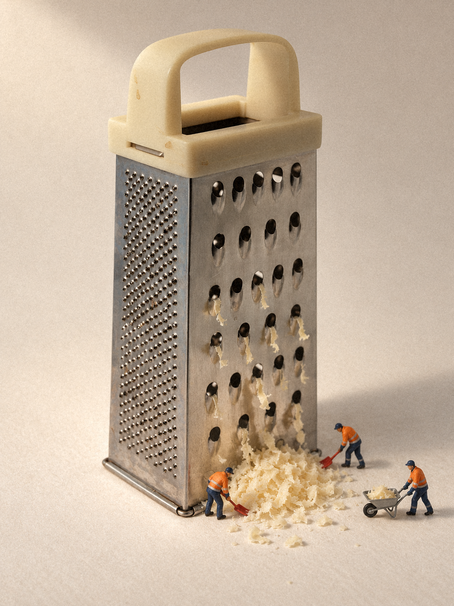
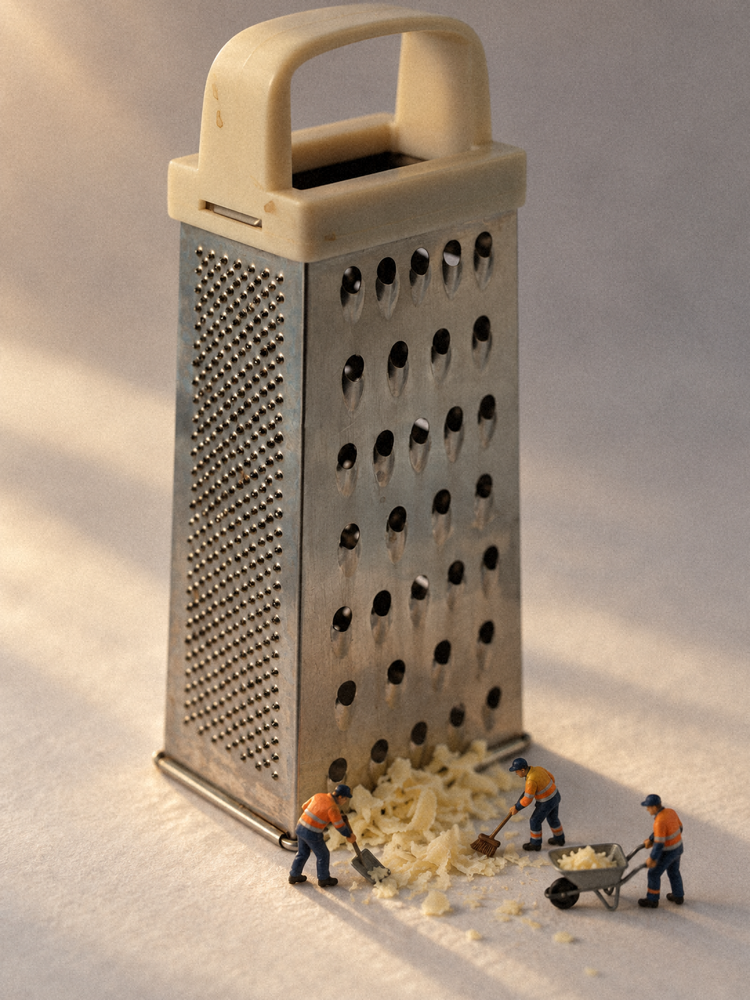

先试一句，不生成图片
安装后在新任务中确认实际加载路径，再发送：
使用 $create-miniature-world，把一把普通刨丝器做成微缩摄影。 先给三个方案，不要生图；说明每案的可见联系，推荐一案。
预期结果：三个不同的物件关系、明确推荐及参考图缺口；此步骤只输出文字，不调用图像工具。Claude Code 把入口改为 /create-miniature-world。物品名称即可完成这项冒烟，不要求下载或提供照片。
它能做什么
- 从物品名称或真实商品照片自主策划，比较不同候选。
- 有图时以可见商品外观为事实源；只有名称时可做自由创作。
- 默认推荐与次选各一张，可指定只要一张；先看方案时比较三个候选并等待选择。
- 按“田中风格”或“实拍光影”组织拍摄；宿主支持参考图输入与编辑时实际传入参考并响应指定修改，工具不足时只交文字。
- 本机依赖可用时另存颗粒/轻景深版，保留原图。
验收范围与边界
2026-10-13 两张真实刨丝器参考样张，经用户对照照片确认商品外观、故事、人物尺度、美感四项通过。它说明这两张在所声明范围内通过，不保证任意商品或细节都可靠。
准确文字、全部 SKU、精确微孔/纹理、隐藏面、真实毫米比例与人偶雕塑型号仍不保证。没有工具时只交方案/提示词；能看图不代表图像工具能接收参考图。
16位RGBA TIFF可能在本机后期丢失Alpha；这类输入保留原图，不运行后期。高位深PNG保护未扩大到所有格式。
输入准备
- 必需：物品名称，或一张主体清楚的商品照片。
- 可选：自己有权使用且可交给宿主处理的人偶实拍、目标构图或具体修改。
- 有人偶时默认使用包内作者照片作涂装参考；其 CC BY-NC 4.0 条件独立适用。商业用途应提供具有相应用途权利的人偶参考，不把 MIT 套到照片。
- 儿童/老人或精确型号超出包内成人三姿态范围，严格匹配需要补充有权使用的实拍。
- 敏感照片、私人文件、账号配置或密钥不适合作为随包公开素材。
模式、次数与成本
| 请求 | 动作 | 工具/费用 |
|---|---|---|
| 先看方案 / 只给提示 | 读图、文字策划 | 不调用图像工具；宿主文字模型费用或额度仍依账号 |
| 直接生成 | 默认推荐与次选各一张；“只生成一张”时一次 | 调用宿主图像工具，可能消耗额度或费用 |
| 修改当前图 | 按用户点名编辑，原图留存 | 需实际编辑能力，可能另消耗额度 |
| 本机后期 | 颗粒、可选轻微景深，另存文件 | 本地 Python/Pillow/NumPy，不调用生图服务 |
默认自动修正最多一次，只限明确结构错误或明显人偶超标；指定次数或禁止重试时优先遵守。它不包含模型、登录、密钥、图像额度或付费 API 客户端，也不会为验收自行接新服务。
安装前看这里
| 环境 | 已验证 | 仍未验证 |
|---|---|---|
| macOS / Codex CLI 0.161.0 | 参考图生成、指定编辑、保存；两条拍法与真实参考样张；2026-10-14本项目新会话显式加载、11文件摘要核对 | 另一台新机器的自动触发、全版本兼容性 |
| macOS / Claude Code 2.1.295（2026-10-09记录） | 项目级安装、显式调用、方案输出；2026-10-14更新并核对11文件 | 当前新拍法及本轮Claude新会话；当时无内置生图/编辑 |
| Windows / Linux | 文件结构可复制，未作为宿主验收 | 宿主发现、生成、更新与卸载状态 |
这里列出测试版本，不声称最低兼容版本。Skill 文件本身没有编译或管理员权限要求。复制十余个运行文件即可；下载和图像账号准备耗时取决于宿主，本轮未计时新机安装。专用ZIP约8.9MB，展开约9.2MB；逐文件大小见随包校验清单。
后期需 Python 3、Pillow、NumPy；本机记录为 Python 3.14.6、Pillow 12.1.1、NumPy 2.4.6，不作为最低版本承诺。缺依赖则先交原图，不自动安装。安装和阅读本指南可离线；AI宿主与图像服务通常需要网络及有效账号。
验证下载，然后安装
从 项目仓库确认发布者和版本；专用安装包应附同名 .sha256 文件。在同一下载目录核验：
shasum -a 256 -c create-miniature-world-v0.1.0.zip.sha256
Windows 可用系统提供的 SHA-256 文件工具比对完整摘要。校验值只有从可信渠道获得时才帮助检查替换或损坏；摘要和压缩包同时来自被篡改渠道时，摘要不会自行证明发布者身份。
解压后，唯一安装源是 skills/create-miniature-world/。v0.1.0仅安装11个运行文件：入口、agents、references、figure-refs及后期脚本；开发源码的evals与CHANGELOG保留在源码，不安装。选择一个安装范围：
| 宿主 | 项目级（推荐） | 用户级（明确需要时） |
|---|---|---|
| Codex | .agents/skills/create-miniature-world/ | ~/.agents/skills/create-miniature-world/ |
| Claude Code | .claude/skills/create-miniature-world/ | ~/.claude/skills/create-miniature-world/ |
先检查同名目录或符号链接，已有版本先比较和备份。首次安装，在解压目录或包含该源的项目根目录执行下列 Codex 示例；它只复制本项目安装目录，不改全局配置：
if [ ! -d skills/create-miniature-world ]; then
echo "请先进入含 skills/create-miniature-world 的项目根目录"
elif [ -e .agents/skills/create-miniature-world ] || [ -L .agents/skills/create-miniature-world ]; then
echo "已有同名目录或链接：先比较与备份，不覆盖"
else
mkdir -p .agents/skills
mkdir -p .agents/skills/create-miniature-world
cp skills/create-miniature-world/SKILL.md .agents/skills/create-miniature-world/
for part in agents references assets scripts; do
cp -R "skills/create-miniature-world/$part" .agents/skills/create-miniature-world/
done
fiClaude Code 改用 .claude/skills/。Windows 可在文件管理器中复制到同名目录，遇已有目录停止，不选择覆盖。复制目录不等于宿主已发现；打开新任务/会话，显式调用 Skill 并核对实际加载文件。项目级与用户级选择一个，避免同时装两份。
两条拍法与验收样张
默认“田中风格”：暖柔主光、短影、米白纸面；说“有实拍光影感”时走“实拍光影”：单侧光、亮暗反差、前后渐进虚化。画面人物默认约高9%，普通分支田中上限12%、实拍上限15%。
把这张商品图做成微缩摄影，保持商品外观，田中风格，只生成一张。 把这张商品图做成有实拍光影感的微缩摄影，保持商品外观，只生成一张。 只把当前图的光线调暖，商品、人物位置和构图保持，另存一个结果。


查看真实参考照、原图/后期、来源、校验值和四维反馈。微孔和纹理不宣称逐点精确复制，遮挡和局部重绘的观察仍保留。AI样张不自动归入MIT或额外商用许可。
工具不足时
我没有可传入参考图的图像工具，但要求商品标签和结构严格保持。 先给方案并说明当前阻塞，不生图，不切换外部服务。
预期：说明参考图输入能力不足，保留文字方案；不能把文字重生成当成保真编辑。
用真实商品照片入门：遥控器Before / After教程展示上传、选案、生成与保真检查；两张当前结果严格细节保真未通过。回归范围与结果另记。
照片和文件会去哪里
商品图、人偶参考及提示会由你当前的AI宿主和图像服务处理，可能离开本机；只提交你有权分享给这些服务的内容。网站没有照片上传或生图入口，本离线指南没有脚本、分析或追踪器。
项目输出通常保存在 outputs/，内置工具还可能在宿主返回的原生路径留存图片（本机 Codex 使用 $CODEX_HOME/generated_images/）。输入保留在你选择的目录，原件不覆盖；日志/缓存与提供商保留期、遥测由宿主与账号设置决定，本轮未核实这些期限。
卸载 Skill 不会自动删除输入、输出、宿主图片或对话。需要清理时先备份，再明确删除自己选择的图片/输出目录，并用宿主界面管理历史和账号数据。不要发送账号配置或密钥，也不要把整批日志、照片目录自动提交到仓库。
更新、回退与卸载
- 先确认实际加载位置；无个人修改时可更新仓库源，有修改时先比较，不强制拉取或覆盖。
- 将旧安装目录复制到独立备份位置，再按上方11文件范围把新源复制到所选安装位置。不要把备份留在宿主扫描的 skills 目录中。
- 新任务中核对11个运行文件并跑“先给方案，不要生图”的冒烟；拉取源码不会自动更新旧安装副本。
- 回退时关闭活动任务，保留新版本副本，再恢复旧目录，并开新任务确认加载。
- 卸载只移除自己选定的安装目录；保留输入、输出和备份，除非另行决定删除。宿主缓存刷新与状态清理未在新主机验证。
本版运行结构不引入额外配置、服务或数据迁移。以上流程已写明；新主机升级/回退/卸载的完整宿主生命周期仍未验收。
排查常见问题
- 找不到Skill：检查所选目录、同名旧版和实际加载路径，打开新任务后显式调用。
- 能看图却不能传图/编辑：分别报告三项能力，保真或编辑步骤保留阻塞，不默认为已支持。
- 没有后期文件：检查Python/Pillow/NumPy；缺依赖交原图。本项目不会自动安装依赖。
- 人物太大或商品改形：对照实际原照和整图，给出具体部件或比例反馈；追加调用仍受你的次数和工具能力约束。
- 高位深/透明图后期不确定：保留原图；16位RGBA TIFF不做本机后期。
反馈与安全诊断
支持渠道：项目GitHub Issues。先收集宿主/操作系统版本、包版本、实际加载目录、非敏感错误文字和原图/结果差异。
分享前删去密钥、账号ID、私人提示、客户图像、家庭目录详情和完整工具响应。能提供图片时先确认有相应用途权利；不要为排查导出账号设置或秘密文件。
版本、来源与状态
当前版本 v0.1.0，已正式发布。Release与安装包于2026-10-13发布并核对；标签为fa442a5。本指南于2026-10-14补充本机安装与新Codex会话显式加载证据；11个运行文件与发布包一致。运行基线仍为源码9085b9f；公开运行基线80673fd为此前核验快照，未因指南更新改动。
MIT覆盖有权许可的代码与自编文档。包内三张人偶照片仅CC BY-NC 4.0；Grater照片Ben Dalton/noii、CC BY 2.0；AI生成及后期图独立列出来源，不提供额外商用/修改/再分发授权。不授予人偶造型或商标权利，不代表田中达也、Preiser或商品品牌官方合作。
状态词：草案=未完整检查；候选=实现存在、还有待验收项；已验证=证据只覆盖明确范围；已发布=远端Release成功并核对；生产就绪=声明范围全部要求通过；阻塞=缺必要输入/能力/授权；待办=已明确延后。用户认可是一项决定，不能替代未运行的工具验证。
历史发布包保留2026-10-13指南快照，未因本次网站/文档维护替换附件或修改标签；仓库内此指南按新证据更新。专用ZIP SHA-256：bce2b004c70e706cefb8d51a3b044d803a65571f2af355b50935b1f6722ddd99。
这份指南是 guide-required，可离线阅读、键盘导航和打印。新机自动发现、跨系统宿主生图、全部商品稳定性和全Skill自演进未宣称验证；本次两案有工具执行证据与用户四维看图结论。